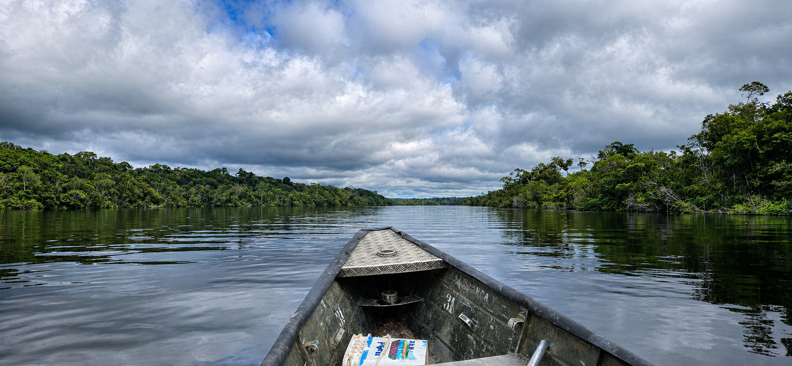
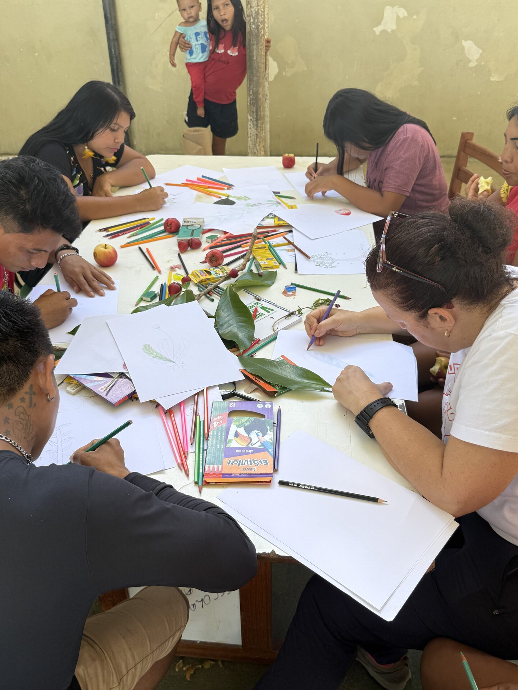
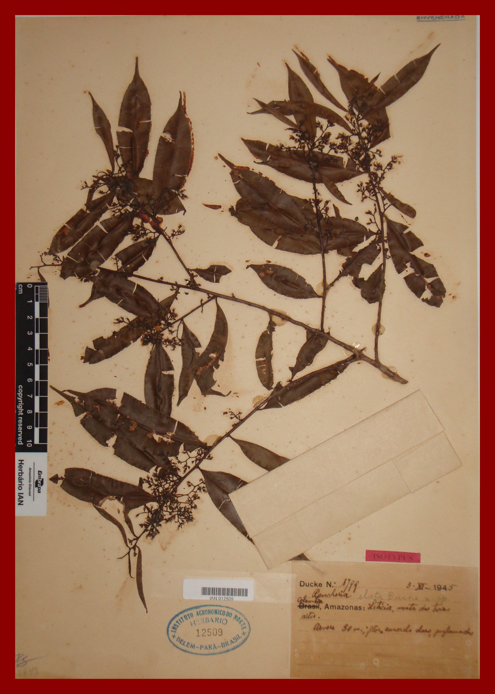
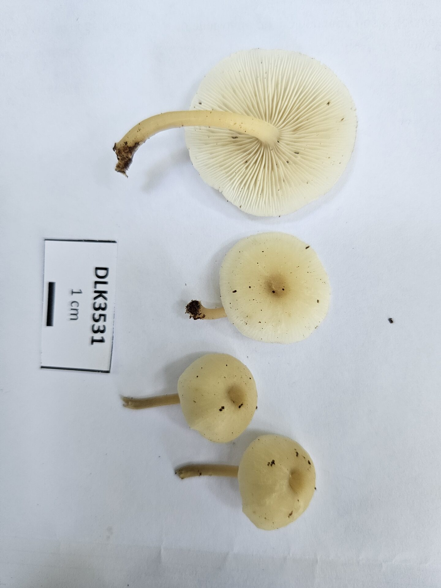
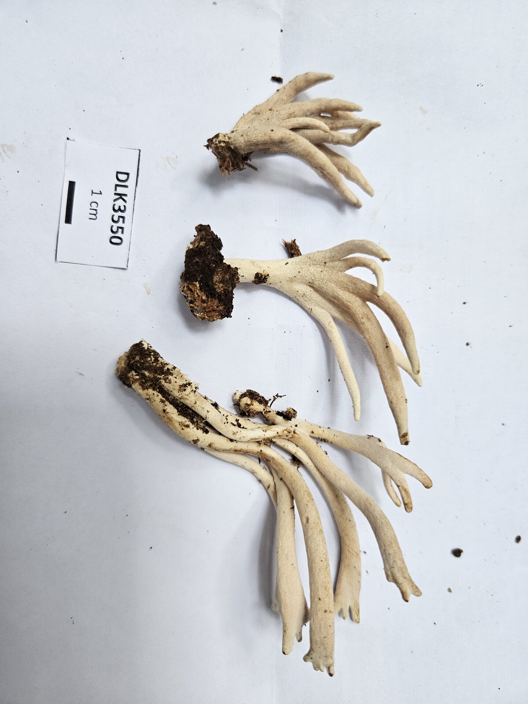
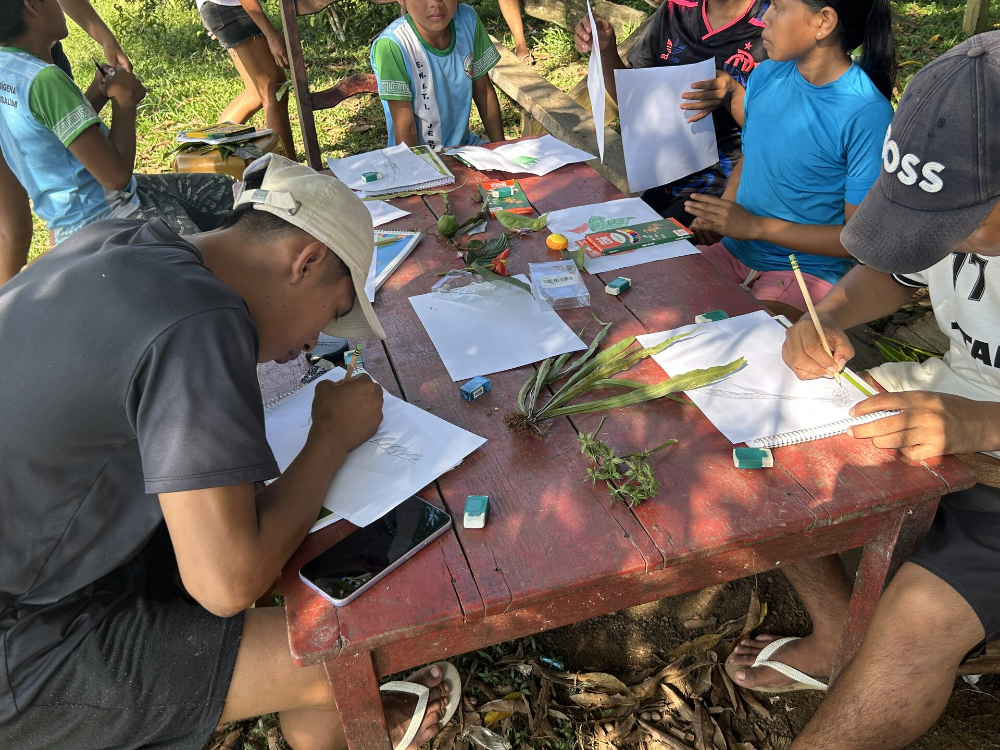

Dimensões da biodiversidade de plantas e fungos no Alto Rio Negro
Chamada Expedições · Iniciativa Amazônia+10 · Brasil + Reino Unido
Tsiino Hiiwiida
Dimensões da biodiversidade de plantas e fungos no Alto Rio Negro
O projeto
Síntese
Revelar múltiplas dimensões dabiodiversidadeno Alto Rio Negro.
Tsiino Hiiwiida, nome Baniwa da região conhecida como Cabeça do Cachorro, é uma das últimas grandes fronteiras de conhecimento sobre a biodiversidade amazônica. O projeto foi aprovada na Chamada Expedições da Iniciativa Amazônia+10 e articula instituições do Brasil e do Reino Unido para revelar múltiplas dimensões da flora e da funga no Alto Rio Negro.
Campinaranas, florestas de terra-firme, igapós, serras e formações aluviais na fronteira entre Brasil, Colômbia e Venezuela. A heterogeneidade ambiental e a longa história geológica da Bacia Amazônica fazem da região um grande cenário para entender evolução, distribuição e endemismos.
O objetivo é acelerar a documentação de plantas e fungos, preencher lacunas taxonômicas, biogeográficas e evolutivas, e formar novas redes de pesquisa com participação local. A expedições de campo, identificação taxonômica, coleções científicas, sistemática molecular, metagenômica, biomonitoramento e comunicação pública.
Da coleta em rios e serras ao catálogo público: o projeto transforma registros de campo, coleções biológicas em conhecimento acessível sobre a flora e a funga da Cabeça do Cachorro.
Três eixos do Projeto

Eixo 1
Habitats e espécies
Compreender campinaranas, florestas de terra-firme, igapós, serras e formações aluviais como mosaicos vivos da flora e da funga do Alto Rio Negro.

Eixo 2
Biodiversidade, sustento e bioeconomia
Investigar PANC, segurança alimentar, nutrientes, metais pesados e usos potenciais de espécies vegetais em diálogo com conhecimentos e demandas locais.
Eixo 3
Campo e tecnologias emergentes
Integrar vouchers, coleções, DNA, metabarcoding, biomonitoramento, bancos de dados e comunicação pública para transformar coletas em conhecimento acessível.
Como o projeto atua
Do campo ao acervo
Cada etapa conecta pesquisa de campo, coleções científicas, análises moleculares, formação de pessoas e comunicação. Assim, os dados coletados durante as expedições retornam como acervo, catálogo, material educativo, exposição e memória pública sobre o Alto Rio Negro.
01
Campo e território
Expedições em diferentes habitats do Alto Rio Negro, articuladas com atores locais e comunidades indígenas, para registrar plantas, fungos e contextos ecológicos.
02
Coleções e amostras
Herborização, vouchers, fotografias, tecidos em sílica-gel e incorporação prioritária aos acervos amazônicos, fortalecendo INPA, MG e coleções parceiras.
03
Dados e validação
Revisão taxonômica, mineração de bases, HerbariumBlitz, sequenciamento, metabarcoding e análises para reduzir lacunas Linneanas, Wallaceanas e Darwinianas.
04
Retorno e circulação
Catálogo verificado, oficinas botânicas, materiais em múltiplas línguas, exposições, fotografia, ilustração científica, redes sociais e curta documental.
Catálogo
Primeira síntese taxonomicamente verificada da flora e funga da Cabeça do Cachorro.
AmaTreeDNA
Banco de tecidos e DNA associado a vouchers de herbário para pesquisas futuras.
Bioeconomia
PANC, segurança alimentar, nutrientes e metais analisados com foco em espécies locais.
Memória pública
Exposições, audiovisual e comunicação em português, inglês, Baniwa, Tukano e Nheengatu.
Objetivos
Objetivosdo projeto
01Campo
Expedições nos rios Negro, Curicuriari, Içana e Vaupés
Campanhas de campo irão amostrar campinaranas, florestas de terra-firme, igapós, serras e afloramentos rochosos, com foco em plantas vasculares, criptógamas e fungos.

02Diversidade críptica e taxonomia integrativa
Revelar linhagens crípticas, raras e pouco conhecidas
Metabarcoding, dados moleculares, morfologia, coleções históricas e novas coletas serão integrados para detectar organismos pouco visíveis aos inventários tradicionais.


03Interações ecológicas
Fungos, hospedeiros e relações ecológicas complexas
A frente investiga a diversidade e evolução de fungos associados a insetos, ampliando o conhecimento sobre interações amazônicas ainda pouco documentadas.
04Bioeconomia e segurança alimentar
PANC, nutrientes e metais em espécies de interesse local
Plantas alimentícias não convencionais, macro e micronutrientes e metais serão analisados conectando biodiversidade, alimentação, saúde ambiental e bioeconomia.
05Biomonitoramento
Bioindicadores para acompanhar qualidade ambiental
Musgos e outros grupos sensíveis serão usados para investigar contaminantes e criar uma base de referência para monitoramento ambiental em áreas indígenas.
06Acervos e dados públicos
Catálogo verificado, herbários e banco AmaTreeDNA
As coletas irão fortalecer herbários amazônicos, apoiar a digitalização de espécimes e consolidar o primeiro catálogo da flora e funga da região.

07Formação e comunicação
Oficinas, estudantes, parataxonomistas e comunicação multilíngue
Oficinas Botânicas, formação de estudantes, participação de parataxonomistas e tradução para Baniwa, Tukano e Nheengatu integram o retorno social do projeto.
O projeto é coordenado por uma rede multidisciplinar vinculada a instituições amazônicas, centros de pesquisa de outros estados brasileiros e parceiros do Reino Unido.
A rede combina taxonomia, sistemática, bioinformática, micologia, briologia, florística, química de solos, comunicação científica, audiovisual e colaboração com parataxonomistas e representantes indígenas.